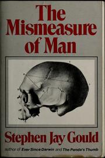

《人类的误测》
书·Stephen Jay Gould, 1981·The Mismeasure of Man

批判智力测量与种族科学的历史；个别指控后来受到修正，宜与原始数据对读。
- 作者
- Stephen Jay Gould
- 年份
- 1981
- 难度
- 进阶
- 类型
- 批评
- 所属学派
- 智力测验、个体差异研究
- 核心理论
- 智商的概念与斯坦福—比奈量表
版本
- 中文版 《人类的误测》 [美] 斯蒂芬·杰·古尔德 · 柳文文 译 · 重庆大学出版社 · 2017 豆瓣 8.2 分（173 人评价） 豆瓣页面 ↗
- 英文版 The Mismeasure of Man Stephen Jay Gould · W. W. Norton, revised and expanded edition · 1996 Open Library ↗